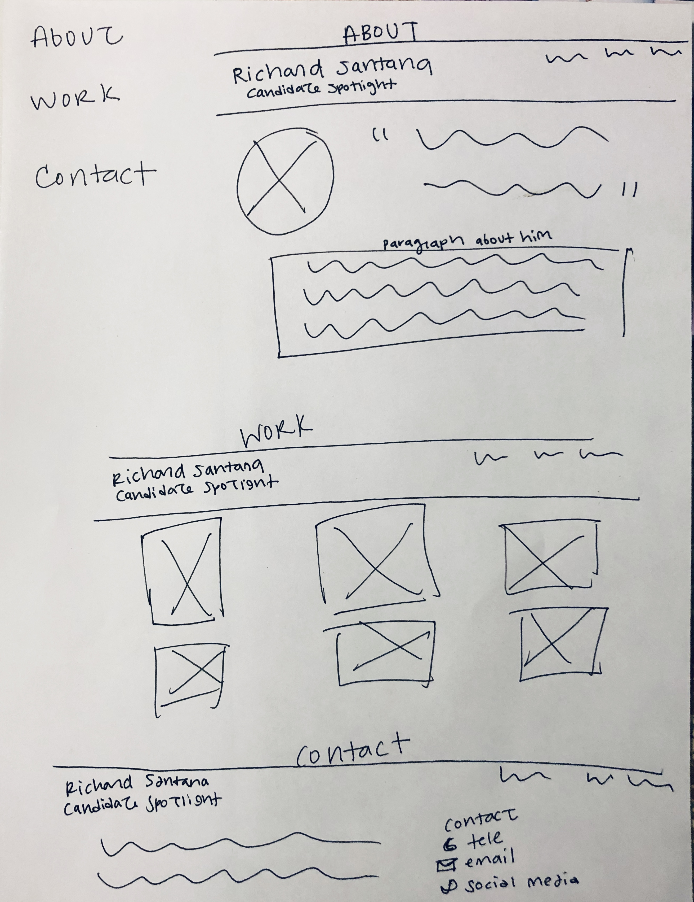

(1) What is the purpose/goal of the design
Introduce Richard Santana. Who is a community leader, businesses, advocate, provide information, connect people, and store content.
(2) Who is the Audience?
Community people and anyone in office.
(3) What message needs to be ccommunicated?
Showcases his work, volunteering and leadership.
(4) What is the competition and marketplace?
Other .
(5) What is the context?
Having an organized and eye-catching design in introducing Richard. Great for potential opportunity, community outreach. Introducing himself and getting a background on who he is. Also, a works page featuring some community outreach works in categories – logo designs, UX/UI, Photoshop, illustration.
(6) In what voice?
Simplistic professional style design. To give a sense of trustworthiness to a business, and good use of design principles like color, relative size, contrast, all help a site’s usability as well as its attractiveness.
(7) What kind of response is desired
Being efficient and personalized to the user. Build on the client needs even changing things if it makes more effective. Doesn't overly complicated, but still understands reasoning behind why each design choice was made.
(Large screen layout)
